The general approach first, then each region in the faculty's order: what to look for, each manoeuvre grouped under what it checks (numbered steps and what counts as positive), and its pearls. Built from the Week 7 Head and Neck objectives; the eye in more depth (swinging flashlight, red reflex, slit lamp) is tagged later and comes from the Transition to Clerkship Ophthalmology objectives.
Look: everything shown. Pick a region below to jump to it.
Eye → Ear → Nose → Mouth → Face and head → Neck
Sit the patient up, look first, then use the instrument or your hands, and compare left with right. Several steps are also cranial nerve tests, so they come back in the neurological exam.
General approach
Every head and neck exam
The general approach
Say it first (TOSCE, Teaching Objective Structured Clinical Exam): "Hi, I'm [name], a medical student. I'd like to examine your head and neck: I'll look at your eyes, ears, nose and mouth and then feel your neck. Is that all right? Let me know if anything is uncomfortable."
Prepare the patient: comfort first, sitting on the bed or table, privacy (curtain drawn), warm your hands and instruments
clean your hands (and the stethoscope) before and after touching the patient; put on and take off personal protective equipment (PPE) properly
work in an orderly sequence so the patient is not moved up and down
Listen to the voice: hoarseness can mean a one-sided recurrent laryngeal nerve lesion (the nerve to the voice box)
⚠ both recurrent laryngeal nerves compressed → concern for breathing difficulty (respiratory distress)
Then work region by region: eye → ear → nose → mouth → face → neck
Tap to reveal
Eye
PPES 2 · Week 7 · 6 manoeuvres
What to look for
Before the manoeuvres
Inspect (exophthalmos, ptosis, swelling, xanthelasma, jaundice and inflammation):
exophthalmos (proptosis): one or both eyeballs bulging forward out of the socket (for example in Graves disease)
eyelids: ptosis (drooping lid), swelling (edema), xanthelasma (yellow fatty plaques on the lids)
conjunctiva and sclera (the white of the eye): yellow = jaundice, red = inflammation
Know the parts: cornea, iris, pupil, lens, anterior and posterior chambers, vitreous, retina, fovea, optic nerve; from outside, eyelid, iris, sclera, pupil
Pupils: the light reflex has an afferent (incoming) limb, the optic nerve (cranial nerve II, CN II), and an efferent (outgoing) limb, the oculomotor nerve (CN III); either can fail on its own
Eye movements: six muscles move each eye (lateral, medial, superior and inferior rectus; superior and inferior oblique). CN III supplies all but two: CN IV → superior oblique, CN VI → lateral rectus. A weak muscle shows as double vision (diplopia) when looking in its direction
Nystagmus: rapid, involuntary to-and-fro eye movements (side to side, up and down, or circular); patients may report blurred vision, poor depth perception, imbalance, or the world seeming to move (oscillopsia)
Scotoma: a blind spot, an area where the patient sees partly or not at all (dark or blurry)
Tap to reveal
Look first
Inspect the eyes and eyelids
Exophthalmos, ptosis, eyelid swelling, xanthelasma, jaundice and inflammation
Steps
Sit at the patient's eye level in good light
Look at the eyes from the front and the side: does either bulge forward (exophthalmos)?
Look at the eyelids: drooping (ptosis), swelling (edema), yellow plaques (xanthelasma)
Gently pull the lower lid down; look at the conjunctiva and sclera for colour
Compare left with right
Positive
Bulging eye, drooping or swollen lid, yellow plaques, yellow sclera (jaundice) or red conjunctiva (inflammation) (normal: eyes level and symmetric, white sclera, pink moist conjunctiva)
Tap to reveal
Pupils and movement (II, III, IV, VI)
Pupils and light reflex
Also a cranial nerve test: II and III · Pupil size, regularity and reaction to light compared with the other pupil
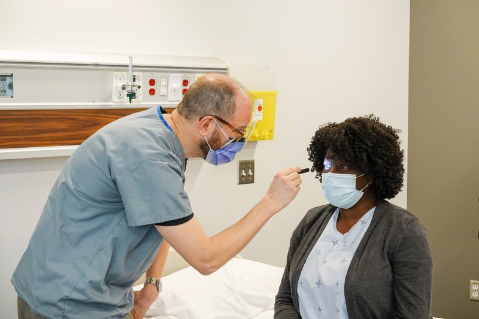
Steps
Look at the size, shape and symmetry of both pupils
Patient looks into the distance
Shine the light into one eye from the side
Watch that pupil (direct) and the other pupil (consensual)
Repeat on the other eye
Near reaction: patient shifts focus to your finger brought toward the nose
Positive
Unequal, irregular, or slow or absent constriction (normal: both pupils constrict almost immediately, directly and consensually, and on near focus)
Tap to reveal
Eye movements
Also a cranial nerve test: III, IV, VI · Range of eye movement in six directions, nystagmus, and double vision in all directions
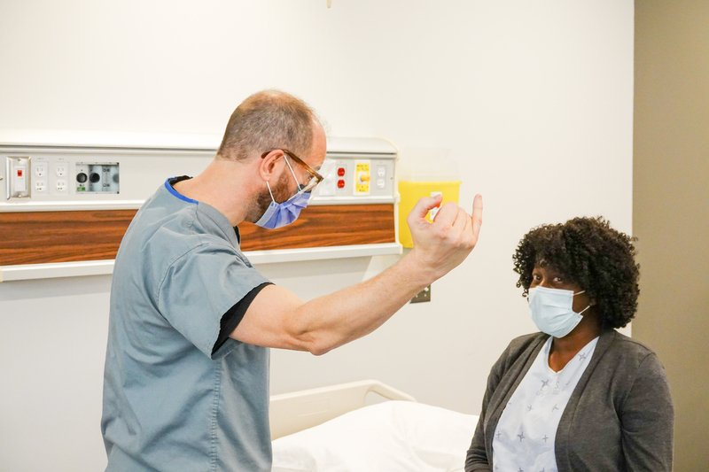
Steps
Hold your finger about 45–60 cm (18–24 inches) away
Patient keeps the head still and follows with the eyes only
Trace an "H": far right, up, down, then far left, up, down
Ask about double vision in each direction
Watch for nystagmus at the end of each movement
Positive
Limited movement, misalignment, double vision in one direction, or nystagmus (normal: full, smooth movement, no diplopia)
Tap to reveal
Vision (II)
Visual fields by confrontation
Also a cranial nerve test: II · Visual fields, tested with your index finger
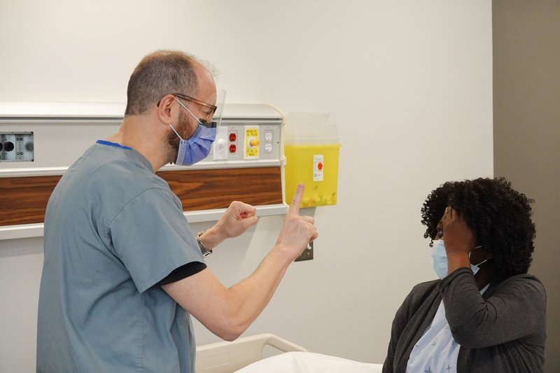
Steps
Sit at the patient's eye level, about an arm's length away
Patient covers one eye; you close your opposite eye (mirror them)
Patient looks at your nose
Bring your index finger in from the edge toward the centre in each of the four quadrants, halfway between you
Patient says when they first see it; repeat for the other eye
Positive
Patient sees the finger later than you do, or not at all, in a quadrant (normal: you both see it at the same time)
Tap to reveal
Visual acuity
Also a cranial nerve test: II · Visual acuity with a pocket-size chart
Steps
Patient keeps on any distance glasses (note them)
Hold the pocket chart at the distance printed on it
Cover one eye; patient reads the smallest line they can (more than half of the letters)
Repeat with the other eye
Positive
Worse than expected or different between the eyes (normal: 20/20; the top number is the test distance, the bottom the distance at which a normal eye reads that line)
Tap to reveal
Inside the eye
Ophthalmoscope: front of the eye, then the fundus
The fundus part is also a cranial nerve test: II · Iris, pupil and lens; then the optic disc (colour, sharpness, elevation), arterioles and veins, the retina between the vessels, and the macula
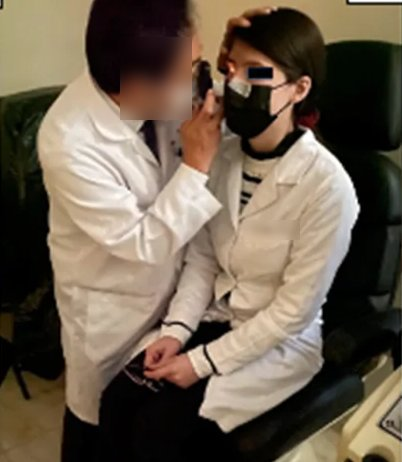
Steps
Dim the room; set the lens dial to 0, finger on the dial to focus
Patient fixes on a point in the distance
From about 15° to the side of their line of sight, look at the iris, pupil and lens, and the red reflex
Move in close; find a vessel and follow it to the optic disc
Note the disc's colour, margins (sharpness) and any elevation, then follow the arterioles and veins outward, the retina between them, and the macula (to the temporal side of the disc)
Positive
Disc swollen with blurred margins (papilledema, raised pressure inside the skull), haemorrhages, or a missing or interrupted red reflex (normal: sharp round or oval disc, pale pink to yellow-orange, cup less than half the disc; veins larger and darker red than arteries)
Tap to reveal
Pearls
Remember
To say: "Pupils are equal, round and reactive to light and accommodation (PERRLA)."
To say: "Visual acuity 20/20 in the right eye and 20/20 in the left, without glasses."
Tap to reveal
Full eye and vision exam
T2C · Ophthalmology · 3 manoeuvres
What to look for
Before the manoeuvres
Focused eye exam with a full assessment of visionlater: T2C Ophthalmology: acuity in each eye separately, visual fields, pupils with the swinging flashlight test, eye movements, and the red reflex with the ophthalmoscope
Ophthalmoscope: what it does and a basic look at the retinalater: T2C Ophthalmology: the same steps as section 2, done on both eyes; the ophthalmoscope is a light with a dial of lenses that focuses your view from the front of the eye back to the retina
Slit lamp: what it doeslater: T2C Ophthalmology: a microscope with a thin, bright beam of light
shows corneal clouding (opacities) and scratches more easily than a penlight
with fluorescein dye and a cobalt blue light, a corneal abrasion lights up green
shining the beam at the edge of the cornea shows the depth of the anterior chamber (shallow in acute glaucoma)
shows blood (hyphema) or pus (hypopyon) in the anterior chamber
Tap to reveal
Optic nerve problem
Swinging flashlight test
Relative afferent pupillary defect (RAPD): an optic nerve problem in one eye later: T2C Ophthalmology
Steps
Dim the room; patient looks into the distance
Shine the light into one eye for a few seconds
Swing it quickly to the other eye
Swing back and forth several times, watching the pupil you are lighting
Positive
Pupil dilates when the light swings onto it (that eye's optic nerve "sees" less light) (normal: each pupil stays constricted as the light arrives)
Tap to reveal
Opacity or misaligned eyes
Red reflex
Opacity in the eye (such as cataract), a large refractive error, or misaligned eyes (strabismus) later: T2C Ophthalmology
Steps
Dim the room; ophthalmoscope at 0
Stand back about an arm's length
Shine the light into both pupils while the patient looks straight ahead
Positive
Dull, uneven or absent red glow, or a white pupil (⚠ a white pupil in a child can mean retinoblastoma) (normal: equal bright red reflex in both eyes)
Tap to reveal
Front of the eye
Slit lamp
Corneal clouding or scratches, depth of the anterior chamber, blood or pus in the anterior chamber later: T2C Ophthalmology
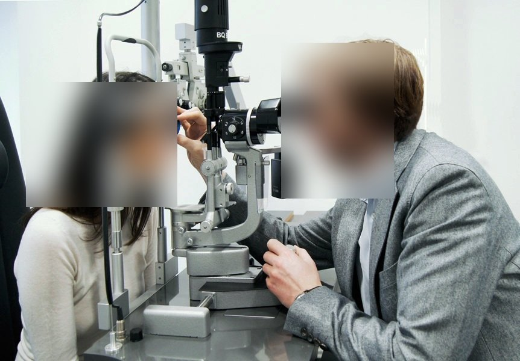
Steps
Dim the room; patient seated with the chin on the rest and forehead against the bar
Look through the microscope with a thin, bright beam, from the eyelid to the cornea to the anterior chamber
For a scratch, add fluorescein dye and a cobalt blue light
Shine the beam at the edge of the cornea to judge how deep the anterior chamber is
Positive
Cloudy cornea · green-lit abrasion · shallow anterior chamber (acute glaucoma) · blood (hyphema) or pus (hypopyon) (normal: clear cornea, no dye uptake, deep clear chamber)
Tap to reveal
Pearls
Remember
A cataract does not cause an RAPD: light still gets around it to the optic nerve.
⚠ Sudden vision loss with an RAPD and a swollen optic disc points to the optic nerve.
The Ophthalmology session's history objective (red eye, chronic vision loss) belongs to history-taking and is not part of this exam note.
Tap to reveal
Ear
PPES 2 · Week 7 · 5 manoeuvres
What to look for
Before the manoeuvres
Inspect the external ear: deformities, skin lesions, inflammation; press on the pinna and in front of the ear for tenderness or masses
name the parts: helix (outer rim), antihelix (inner ridge), tragus (flap in front of the canal), lobule, pinna (auricle)
Know the layout: external ear (pinna and ear canal) → tympanic membrane (eardrum) → middle ear (air-filled, with the ossicles malleus, incus, stapes; connected by the Eustachian tube to the back of the nose to equalize pressure) → inner ear (cochlea, semicircular canals, CN VIII)
the outer canal is cartilage (with hair and wax glands); the inner canal is bone, and pressing there hurts
Otoscope: inspect the canal and the eardrum in both ears, and note whether the canal is patent (open)
Hearing (CN VIII) with a 512 Hz tuning fork, whisper or finger rub
Tap to reveal
Outer ear
Inspect the external ear
Name the parts; deformity, skin lesions, inflammation, tenderness
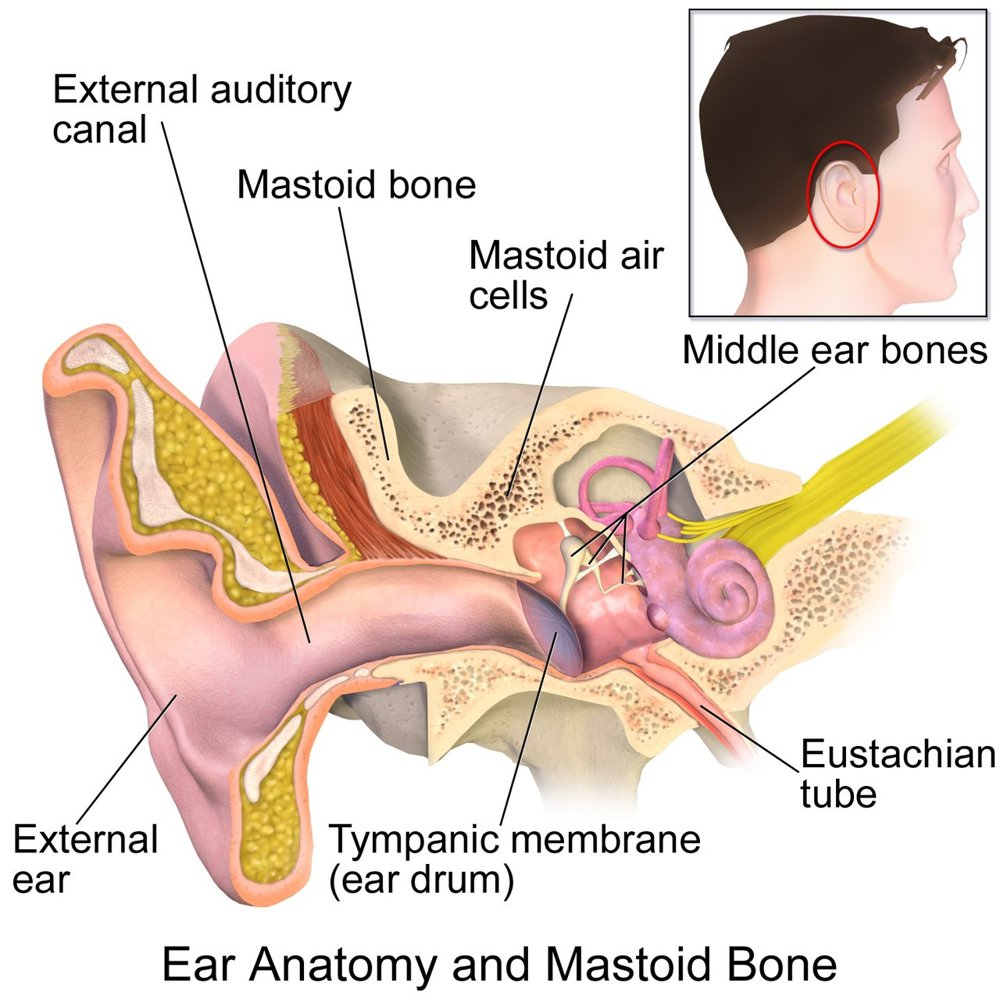
Steps
Look at the pinna from the side and behind: name the helix, antihelix, tragus and lobule
Look for deformity, skin lesions, redness and discharge
Press in front of the ear and over the mastoid behind it, and move the pinna, noting tenderness or masses
Compare the two ears
Positive
Deformity, lesion, redness, swelling or tenderness (normal: symmetric, non-tender, no discharge)
Tap to reveal
Canal and eardrum
Otoscopy
Ear canal (patent?) and eardrum, both ears
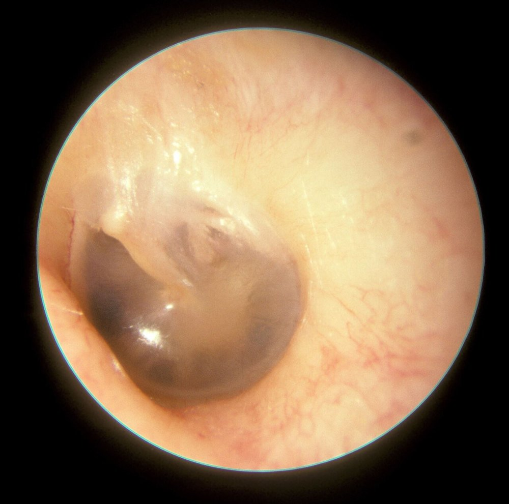
Steps
Hold the otoscope like a pencil, your hand braced on the patient's head
Pull the pinna back (up and back in an adult) to straighten the canal
Insert gently into the outer (cartilage) part only
Look at the canal: wax, discharge, redness, foreign body, swelling
Find the eardrum landmarks: handle (manubrium), lateral process and umbo of the malleus, cone of light, pars tensa and pars flaccida
Positive
Red (inflammation; also fever or crying) · bulging (pus, acute infection) · pulled in (retracted) (Eustachian tube problem or fluid) · hole (perforation) · poor movement (fluid behind it) (normal: intact drum with the landmarks and cone of light visible, canal open)
Tap to reveal
Is there hearing loss? (VIII)
Whisper or finger-rub test
Also a cranial nerve test: VIII · Hearing loss in one ear
Steps
Patient closes their eyes; block one ear (or rub your fingers beside it to mask it)
Stand so they cannot see your lips
Whisper numbers, or rub your fingertips by the open ear
Repeat on the other side
Positive
Cannot repeat the numbers or hear the rub → go on to Weber and Rinne (normal: hears both sides equally)
Tap to reveal
Which kind of hearing loss?
Weber test
Which ear and which kind of hearing loss
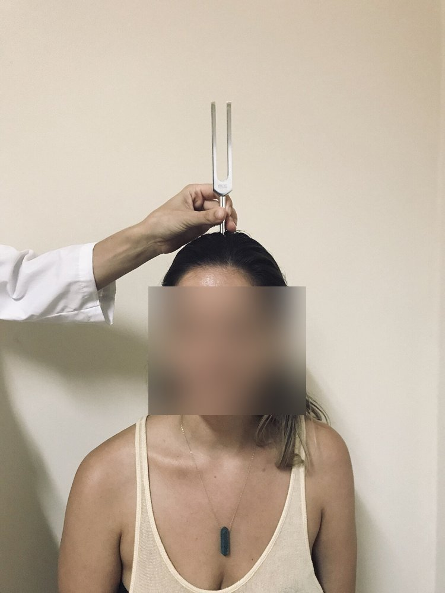
Steps
Strike a 512 Hz fork
Place it on the top of the head (midline)
Ask: "Do you hear it in both ears, or louder on one side?"
Positive
Louder in the bad ear = conductive loss · louder in the good ear = sensorineural loss (normal: heard equally, in the middle)
Tap to reveal
Rinne test
Conductive hearing loss
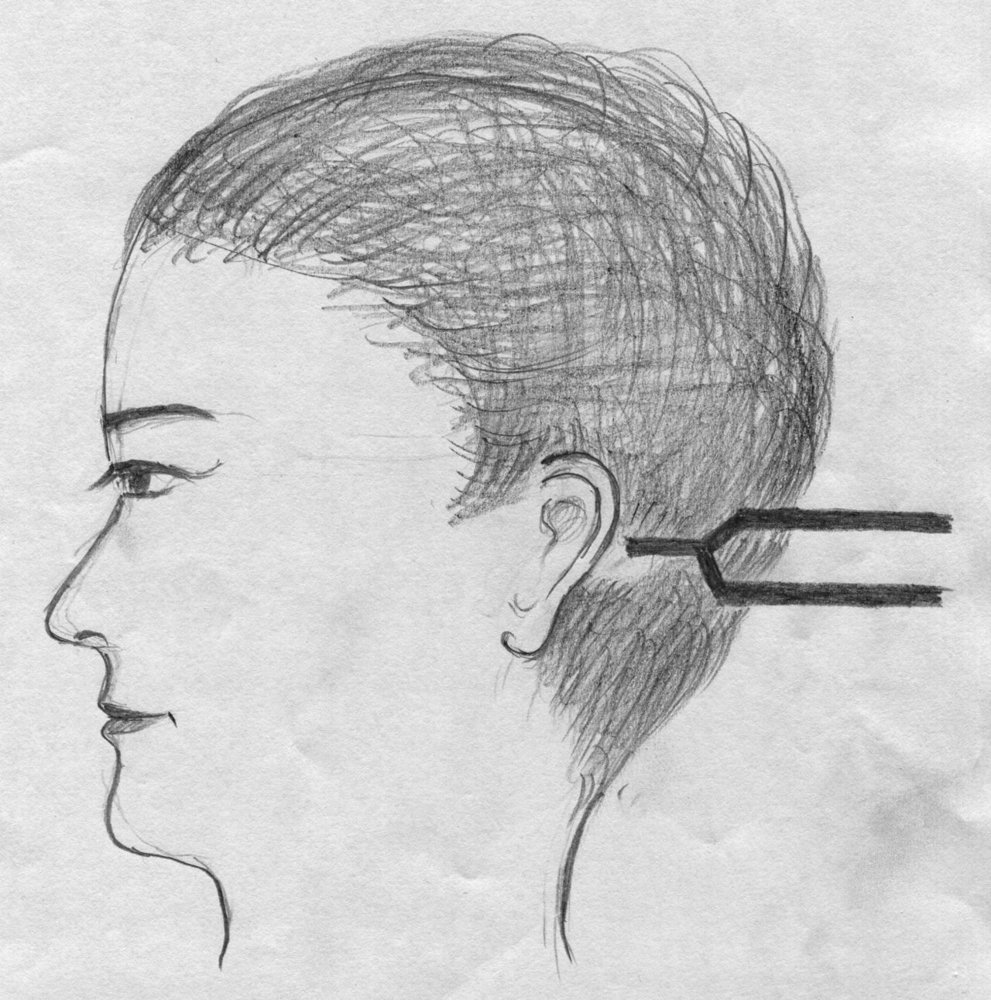
Steps
Place the vibrating fork on the mastoid bone behind the ear
Patient says when the sound stops
Move the prongs beside the ear canal straight away
Ask if they can hear it again
Positive
Cannot hear it beside the ear (bone conduction louder than air) = conductive loss in that ear (normal: hears it again, air conduction louder than bone)
Tap to reveal
Pearls
Remember
With sensorineural loss, Rinne stays normal (air louder than bone); it is Weber that points to the good ear.
Tap to reveal
Nose
PPES 2 · Week 7 · 2 manoeuvres
What to look for
Before the manoeuvres
Know the layout: the nasal septum separates the nostrils (nares); only the upper third of the outside of the nose is bone, the rest cartilage; three turbinates (superior, middle, inferior) stick out from each side wall
Inspect the outside: deviation, asymmetry, skin lesions
Patency of each nostril: press one nostril closed and ask the patient to breathe in through the other; repeat on the other side
Look inside with the otoscope and a wide speculum (or a nasal speculum and light), and avoid touching the septum
septal deviation: the septum bowed toward one side
turbinate size: the inferior and middle turbinates are the ones you see
mucosa normally pink, moist and smooth; look for polyps or ulcers
allergic rhinitis: swollen inferior turbinates, with a purplish tinge and clear discharge
Tap to reveal
Airflow
Nostril patency
Whether air passes through each nostril
Steps
Patient sits facing you
Press one nostril closed with your finger
Ask them to breathe in through the other
Repeat on the other side
Positive
Little or no airflow through one nostril (swelling, a bowed septum or a polyp) (normal: air moves freely through both)
Tap to reveal
Inside the nose
Septum and turbinates
Septal deviation and turbinate size
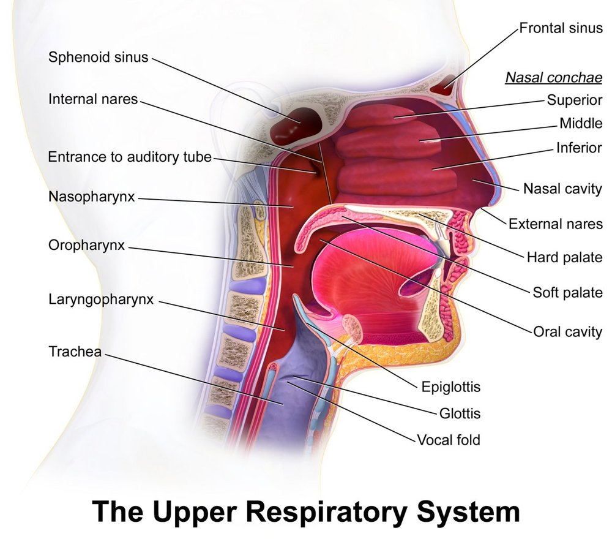
Steps
Tilt the patient's head back a little
Use the otoscope with a wide speculum (or a nasal speculum and light), lifting the tip of the nose
Look at the septum, and avoid touching it
Look at the inferior and middle turbinates: size and colour
Check the mucosa for polyps or ulcers; repeat on the other side
Positive
Septum bowed to one side · swollen turbinates (purplish with clear discharge in allergic rhinitis) · polyps or ulcers (normal: septum central, turbinates small, mucosa pink, moist and smooth)
Tap to reveal
Mouth and throat
PPES 2 · Week 7 · 3 manoeuvres
What to look for
Before the manoeuvres
Know the landmarks: the oral cavity holds the lips, the front two-thirds of the tongue, the hard palate and teeth
labial frenulum: the fold joining each lip to the gum · lingual frenulum: joins the underside of the tongue to the floor of the mouth
submandibular gland ducts open under the tongue, either side of the lingual frenulum · parotid ducts open on the inside of the cheek near the upper second molar, often marked by a small bump (papilla)
at the back: anterior and posterior tonsillar pillars, tonsils, soft palate, uvula
Inspect the lips, the tongue, the teeth and gums with a light and tongue depressor: masses, ulcers, colour change
tongue top and underside and the floor of the mouth (cancer risk is higher with tobacco and alcohol use)
Movements of the palate and tongue (CN IX, X, XII)
Tap to reveal
Look first
Lips, tongue, teeth, gums and throat
Masses, ulcers and colour change
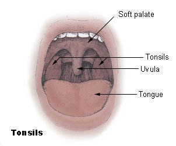
Steps
Look at the lips: colour, cracks, ulcers, masses
Patient opens wide: look at the teeth and gums (colour, swelling, bleeding, ulcers)
Look at the top of the tongue, then ask them to lift it and look at the underside and floor of the mouth
Look at the inside of the cheeks, including the parotid duct opening near the upper second molar
With a tongue depressor, look at the soft palate, uvula, pillars and tonsils
Positive
Mass, ulcer, white or red patch, swelling or exudate (normal: pink, moist, intact; tonsils not enlarged or coated)
Tap to reveal
Movement (IX, X, XII)
Palate rise
Also a cranial nerve test: IX, X · Movement of the palate
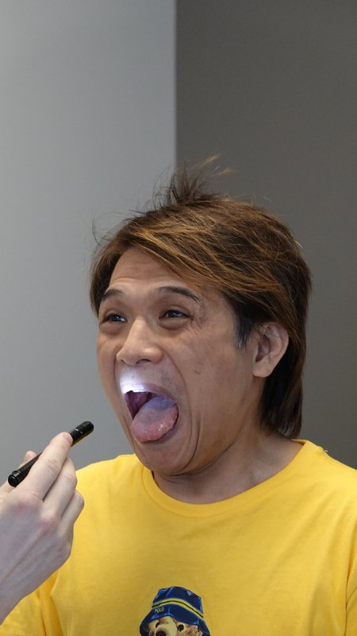
Steps
Patient opens wide (tongue depressor if needed)
Ask them to say "ahh"
Watch the soft palate and uvula
Positive
Palate rises on one side only, uvula pulled to one side (normal: palate rises evenly, uvula stays in the midline)
Tap to reveal
Tongue
Also a cranial nerve test: XII · Movement of the tongue
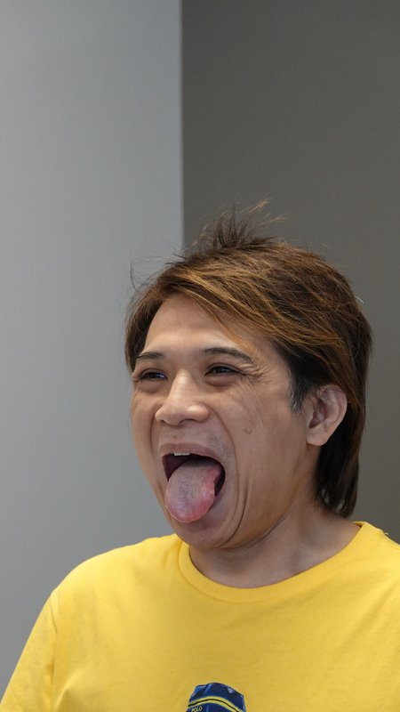
Steps
Look at the tongue resting on the floor of the mouth: wasting, twitching (fasciculations)
Patient sticks the tongue straight out
Then moves it side to side
Positive
Tongue points to one side when stuck out (toward the weak side), wasting or fasciculations (normal: midline, moves freely)
Tap to reveal
Face and head
PPES 2 · Week 7 · 3 manoeuvres
What to look for
Before the manoeuvres
Texture and distribution of hair · Skin: colour, lesions
Facial movements (CN VII): look at the face at rest first (symmetry, tics), then test the movements below
ask about taste (gustation) (CN VII carries taste from the front two-thirds of the tongue)
lower motor neuron lesion (for example Bell's palsy): the whole side of the face is weak, forehead included
upper motor neuron lesion (for example stroke): the lower face on the opposite side is weak, forehead spared
Strength of the sternocleidomastoid and trapezius (CN XI): look first for wasting and asymmetry of the neck and shoulders
Tap to reveal
Look first
Hair and skin
Texture and distribution of hair; skin colour and lesions
Steps
Look at the hair: amount, distribution (patchy loss?) and texture (coarse, fine, brittle)
Look at the scalp and the skin of the face and neck: colour, pigmentation, scaling, lumps, lesions
Positive
Patchy or diffuse hair loss, very coarse or fine hair, abnormal colour or a skin lesion (normal: even distribution, normal texture, clear skin of even colour)
Tap to reveal
Nerves (VII, XI)
Facial movements
Also a cranial nerve test: VII · Facial nerve (CN VII) weakness
Steps
Wrinkle the forehead (raise the eyebrows)
Close the eyes tightly; try gently to open them
Bare the teeth in a broad smile
Puff out the cheeks
Pucker the lips
Positive
One side weaker or flatter; whole side = lower motor neuron, lower face only = upper motor neuron (normal: symmetric, strong)
Tap to reveal
Shoulder shrug and head turn
Also a cranial nerve test: XI · Trapezius and sternocleidomastoid strength
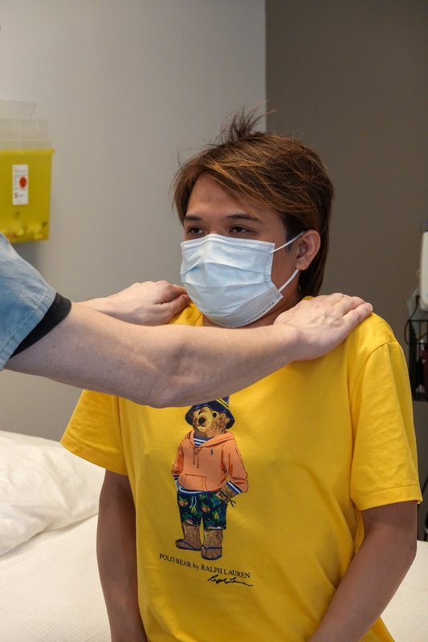
Steps
Patient shrugs and holds it while you push down on both shoulders
Patient turns the head to each side against your hand
Positive
Weakness or wasting on one side (normal: strong, equal)
Tap to reveal
Neck
PPES 2 · Week 7 · 5 manoeuvres
What to look for
Before the manoeuvres
Inspect for venous distention, masses, lymph nodes, salivary gland enlargement, thyroid enlargement and masses
Landmarks of the neck around the thyroid (midline, top to bottom): hyoid bone (just under the jaw, moves) → thyroid cartilage with its notch ("Adam's apple") → cricoid cartilage just below → thyroid isthmus just below the cricoid, across the trachea (about the 2nd to 4th tracheal rings) → lateral lobes beside the cricoid, along the sides of the trachea
Name the lymph nodes of the head and neck:
preauricular: in front of the ear
posterior auricular: behind the ear, over the mastoid
occipital: at the back, at the base of the skull
tonsillar (jugulodigastric): at the angle of the jaw
submandibular: halfway between the angle and the tip of the jaw
submental: midline, just behind the tip of the jaw
anterior cervical: over and along the sternocleidomastoid
posterior cervical: along the front edge of the trapezius
supraclavicular: along the top of the collarbone, deep in its angle
Describe any node or mass by distribution, size, shape, mobility, tenderness and consistency
Lymphatic drainage of the thyroid: lower cervical and supraclavicular nodes, and the upper mediastinum
Tap to reveal
Look first
Neck inspection
Venous distention, masses, lymph nodes, salivary gland and thyroid enlargement
Steps
Patient sits with the neck exposed and the head straight, in good light
Look from the front and both sides at the neck veins, any visible mass, the lymph node areas, the parotid and submandibular glands and the thyroid area
Compare left with right
Positive
Distended neck veins, visible swelling or asymmetry (normal: symmetric, no visible mass or swelling)
Tap to reveal
Lumps and nodes
Lymph node palpation
Lymph nodes or masses in the neck and supraclavicular area
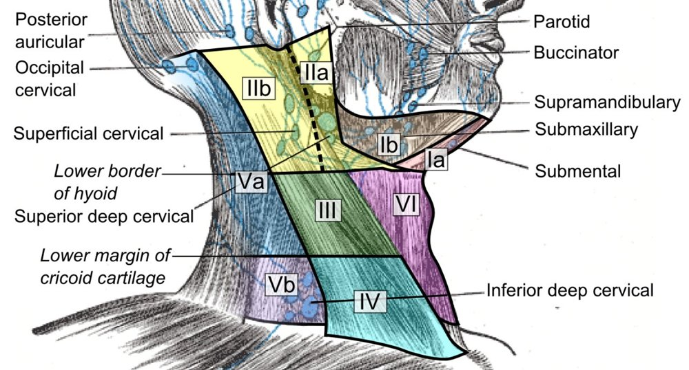
Steps
From the front, use the pads of the index and middle fingers in small circles, light then firmer
Feel both sides together to compare
Go through every group in order (list above)
Do the anterior cervical chain one side at a time (so you never press both carotid arteries)
Positive
Enlarged, hard, fixed or tender node (normal: none felt, or small, soft, mobile, non-tender)
Tap to reveal
Salivary glands
Parotid and submandibular enlargement and tenderness
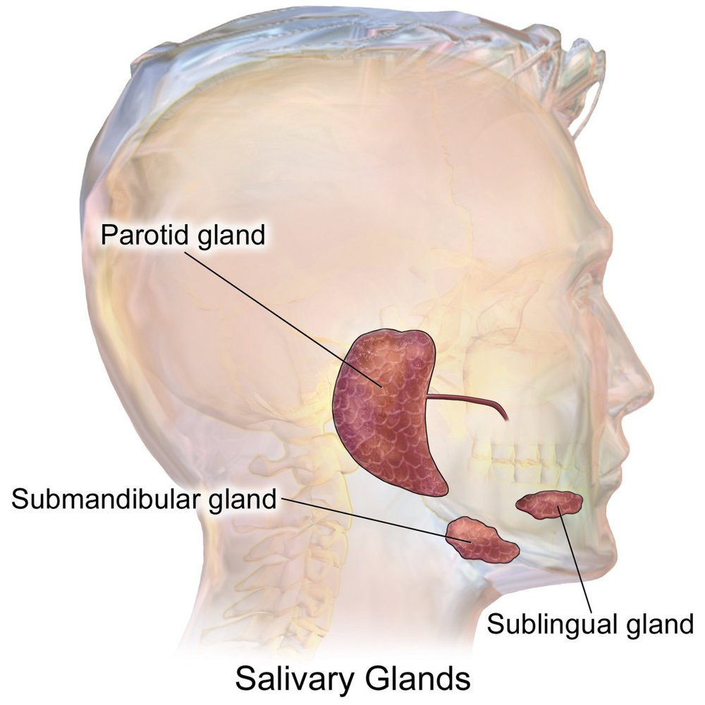
Steps
Parotid: feel in front of the ear, over the angle of the jaw
Submandibular: feel under the jaw, in from its lower edge
Compare the sides
Positive
Swelling or tenderness of a gland (normal: not enlarged, non-tender)
Tap to reveal
Thyroid
Thyroid inspection
Thyroid at rest and with swallowing
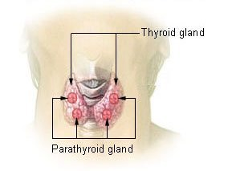
Steps
Stand in front
Look at the lower neck at rest
Patient takes a sip of water and swallows
Watch the thyroid rise with the swallow
Positive
Swelling on both sides (goitre) or one side (a thyroid mass) (normal: not visible, or a symmetric rise)
Tap to reveal
Thyroid palpation
The isthmus and the left and right lobes, from behind
Steps
Stand behind the seated patient
Find the thyroid cartilage, then the cricoid
Just below the cricoid, feel the isthmus rise as the patient swallows a sip of water
One lobe at a time: gently push the trachea toward the other side, and feel the lobe between the trachea and the sternocleidomastoid while they swallow
Repeat on the other side
Positive
Enlarged, asymmetric, nodular or tender (normal: symmetrical, non-nodular, non-tender)
Tap to reveal
Pearls
Remember
To say: "The thyroid is symmetrical, non-nodular and non-tender."
To say about a node: name its group and side, then its size, shape, mobility, tenderness and consistency (for example "soft, mobile and non-tender").
Feel one thyroid lobe at a time so you never press on both carotid arteries.
Thyroid bruitextra: listen over each lobe while the patient holds their breath; a bruit (a continuous whooshing sound from extra blood flow) suggests an enlarged, overactive gland such as Graves disease.
Look for exophthalmos at the same time: bulging eyes with an enlarged thyroid suggests Graves disease.
Tap to reveal
Videos
Library videos from the Health Education Media Library (Western Libraries; Clinical Neurological Sciences, Schulich School of Medicine and Dentistry), CC BY-NC 4.0, played from the library's own server; other videos are from the Geeky Medics channel on YouTube. Each opens only when you tap it.
Image credits
Images reused under their open licences (Creative Commons or public domain). Some were cropped to hide faces.
Pupils and light reflex: Clinical Neurological Sciences, Schulich School of Medicine and Dentistry (Health Education Media Library, Western Libraries), CC BY-NC 4.0, source
Swinging flashlight test: Clinical Neurological Sciences, Schulich School of Medicine and Dentistry (Health Education Media Library, Western Libraries), CC BY-NC 4.0 (frame from video), source
Eye movements: Clinical Neurological Sciences, Schulich School of Medicine and Dentistry (Health Education Media Library, Western Libraries), CC BY-NC 4.0, source
Visual fields by confrontation: Clinical Neurological Sciences, Schulich School of Medicine and Dentistry (Health Education Media Library, Western Libraries), CC BY-NC 4.0, source
Visual acuity: Clinical Neurological Sciences, Schulich School of Medicine and Dentistry (Health Education Media Library, Western Libraries), CC BY-NC 4.0, source
Ophthalmoscope: front of the eye, then the fundus: Shiokawa A, Monteiro MLR, Massuda R, et al., Clinics (Sao Paulo) 2026, Fig. 2B, CC BY 4.0 (cropped to panel B, examiner's face and name badge blurred; patient's eyes barred in the original), source
Palate rise: Clinical Neurological Sciences, Schulich School of Medicine and Dentistry (Health Education Media Library, Western Libraries), CC BY-NC 4.0, source
Tongue: Clinical Neurological Sciences, Schulich School of Medicine and Dentistry (Health Education Media Library, Western Libraries), CC BY-NC 4.0, source
Facial movements: Clinical Neurological Sciences, Schulich School of Medicine and Dentistry (Health Education Media Library, Western Libraries), CC BY-NC 4.0, source
Shoulder shrug and head turn: Clinical Neurological Sciences, Schulich School of Medicine and Dentistry (Health Education Media Library, Western Libraries), CC BY-NC 4.0, source